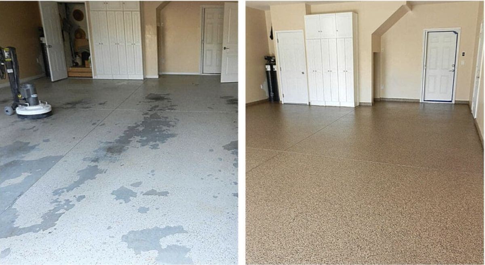
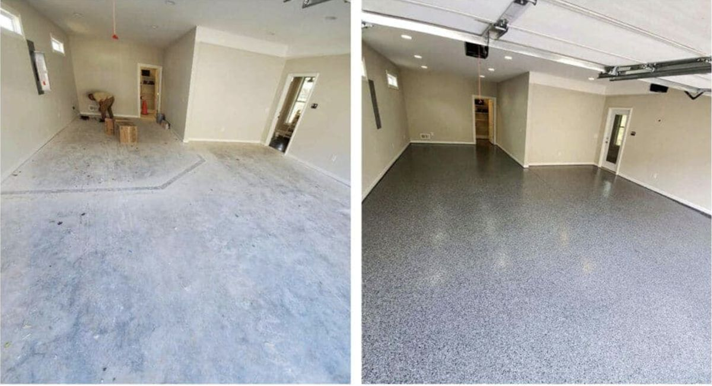

If you’ve looked into floor coatings for a Tucson garage or concrete space, you’ve probably seen “polyaspartic” come up as a premium option. It is—and in Arizona specifically, the performance gap between polyaspartic and standard epoxy is wider than almost anywhere else in the country, because Tucson’s heat and UV intensity stress floor coatings in ways that cooler climates don’t.
Arizona’s Best Choice
UV-stable, heat-rated polyaspartic systems that handle Tucson’s 100-degree temperature swings without peeling, yellowing, or cracking. Fast-curing—most installs are done in a day.
📞 Call (520) 675-6593 for a Free EstimatePolyaspartic is a subset of polyurea chemistry—a flexible, fast-curing resin that bonds to concrete and resists UV radiation, temperature extremes, and chemical exposure better than traditional epoxy. Most residential polyaspartic systems include three components: a penetrating primer, a color broadcast layer, and the polyaspartic topcoat itself.
In a standard Tucson installation, we diamond grind the slab first, then apply the primer coat and allow it to penetrate fully. The color broadcast system goes down next—either a solid-color epoxy base with decorative flake broadcast, or a direct-to-concrete color coat. The polyaspartic topcoat seals everything and provides the UV and abrasion resistance the finished floor needs to survive Arizona conditions.
The full process typically takes one day. By the next morning, the floor is ready for light foot traffic. Heavy vehicle parking is usually safe within 24 to 48 hours depending on temperature during cure.

Standard epoxy topcoats don’t handle Tucson UV exposure. If your floor yellowed or peeled within a few years, polyaspartic as the topcoat is the fix—not a repeat of the same system.
Polyaspartic cures in four to six hours. If you can’t afford to leave a garage or commercial space out of service overnight, polyaspartic is the only coating system that meets that timeline.
Windows, open doors, skylights—any UV exposure will degrade standard epoxy over time. Polyaspartic is specifically formulated to resist UV-induced yellowing and degradation.
For Tucson homeowners who want to coat the floor once and not think about it again, polyaspartic’s combination of flexibility, UV stability, and heat resistance makes it the longest-lasting option available.

The core issue is rigidity. Standard epoxy becomes a very hard, inflexible coating when fully cured. In a climate where garage slab temperatures can swing from 30°F on a January night to 140°F on a July afternoon, that rigidity works against the coating. The concrete expands and contracts significantly across those temperature swings, and a rigid coating that can’t flex with it develops hairline cracks and delamination points over time.
UV degradation compounds the problem. Arizona receives some of the highest solar radiation levels in North America. Standard epoxy resins yellow visibly under that exposure within a few seasons, even in covered garages that receive indirect light. Polyaspartic resins include UV stabilizers in their chemistry that prevent this yellowing—it’s not an add-on, it’s in the formulation.
Monsoon season adds a third variable. When summer humidity spikes from below 20% to above 50% in a matter of hours, it affects freshly applied coatings and can stress coatings that lack moisture-vapor barriers. Polyaspartic’s fast cure rate is an advantage here—it reaches a stable hardness before humidity has time to affect the surface.
Call for Free Estimate in Tucson →Full polyaspartic systems cost more upfront than basic epoxy, but require fewer coats over the life of the floor. Here’s what Tucson homeowners typically invest:
| Space | System | Price Range |
|---|---|---|
| Single-car garage (~200 sq ft) | Solid color + polyaspartic topcoat | $1,000 – $2,000 |
| Two-car garage (~400 sq ft) | Flake broadcast + polyaspartic topcoat | $2,000 – $4,000 |
| Three-car or workshop (~600 sq ft) | Flake broadcast + polyaspartic topcoat | $3,000 – $6,000 |
| Polyaspartic topcoat over existing epoxy | Topcoat only (if base is sound) | $1.50 – $3.50/sq ft |
Written quotes provided after on-site assessment. Surface condition and prep requirements affect final cost.
Get My Free EstimateFor Tucson specifically, polyaspartic outperforms standard epoxy as a topcoat because it handles UV exposure without yellowing and stays flexible through the extreme temperature swings between Tucson winters and summers. Standard epoxy can soften above 140°F—a temperature Tucson garage slabs regularly exceed in July and August. The best approach is an epoxy base coat for adhesion and build thickness, with a polyaspartic topcoat for protection.
Polyaspartic cures significantly faster than standard epoxy. In Tucson temperatures, most polyaspartic topcoats are ready for foot traffic in four to six hours and vehicle traffic in 24 hours. Full cure is typically achieved within 48 to 72 hours. The faster cure is one reason polyaspartic is popular for commercial spaces that can’t afford extended downtime.
Polyaspartic concrete coating in Tucson costs $5 to $10 per square foot for a full system with surface prep, color flake or solid color base, and polyaspartic topcoat. A standard two-car garage runs $2,000 to $4,000. The higher material cost compared to basic epoxy is offset by a longer service life and lower long-term maintenance.
In some cases, yes. If an existing epoxy base coat is well-bonded, clean, and undamaged, a polyaspartic topcoat can be applied over it to restore gloss and add UV protection. If the existing coating is peeling, bubbling, or poorly adhered, it needs to be removed first. We assess existing coatings during the walkthrough and give you a clear recommendation.